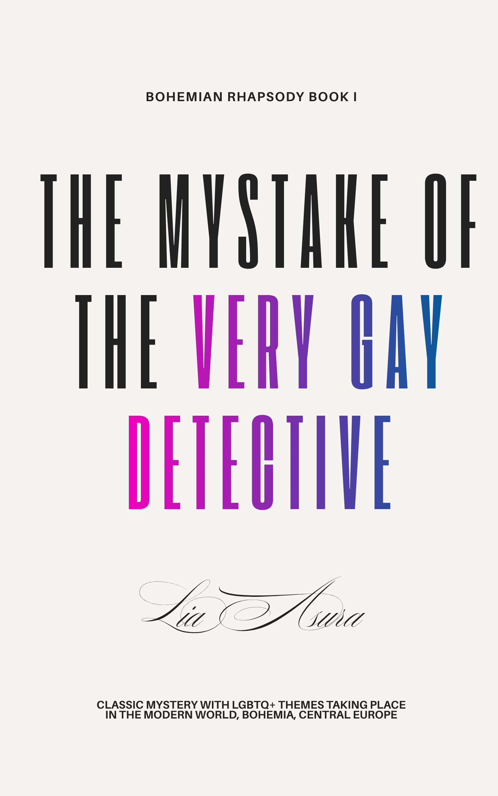

BOOK ONE
The Mystake of the Very Gay Detective
The country is Bohemia, Central Europe. You must have heard about this country from one of the most popular Sherlock Holmes stories: A Scandal in Bohemia. Well, the story itself takes place in England, but the infamous Irene Adler managed to blackmail the King of Bohemia. Which is kind of a thing for our monarchs.
The second popular thing is Bohemian Rhapsody, which was written when Freddie and the boys lived in our country for a while. At that time, the current king – a descendant of the one from the Irene Adler story, though thankfully much less creepy – proposed Freddie to become his Queen. The constitution was rewritten overnight, making Bohemia the first country in Europe to legalize gay marriages. Sadly, it was mostly useless, because the neighboring countries didn’t listen to this law. And anyways, Freddie changed his mind and left.
After that, Bohemia became a sort of popular destination for gays, lesbians, and other queer folk. The result is that now about forty-five percent of our population is not straight.
But I digress.
I was asked to write this story against my will. Querying